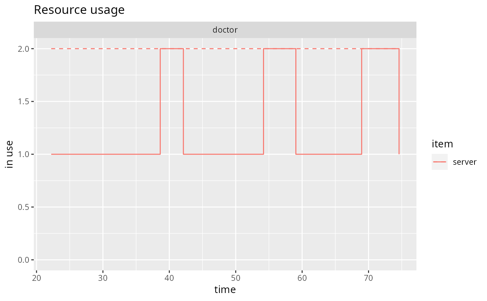
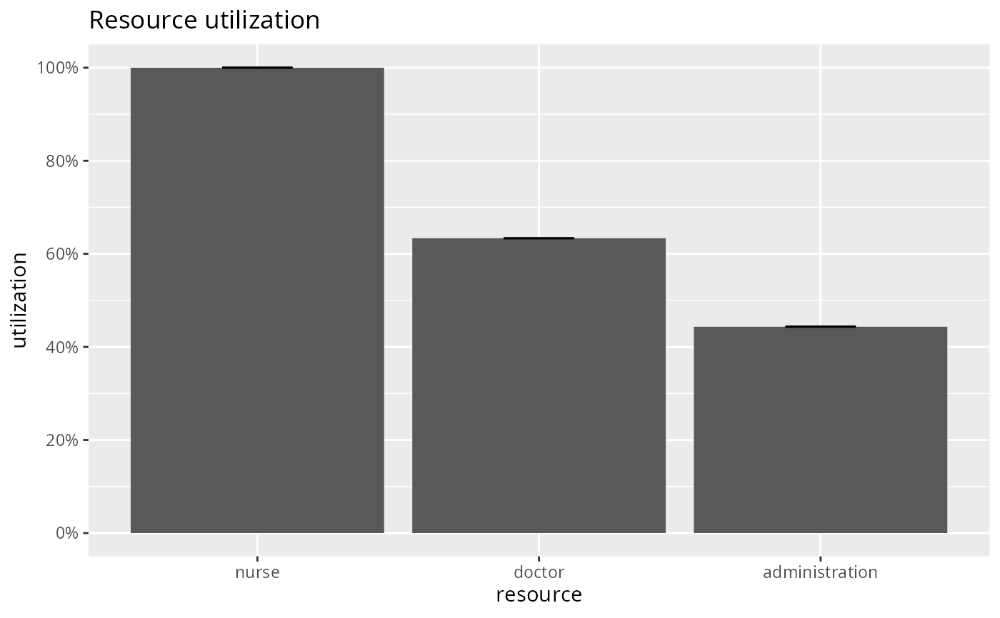

simmer Monitoring StatisticsR/plot.arrivals.R, R/plot.attributes.R, R/plot.resources.R, and 2 more
plot.mon.RdMethods for the plot generic. See below for details about each
metric available.
# S3 method for arrivals plot(x, metric = c("activity_time", "waiting_time", "flow_time"), ...) # S3 method for attributes plot(x, metric = NULL, keys, ...) # S3 method for resources plot(x, metric = c("usage", "utilization"), names, ...)
| x | a data frame of class |
|---|---|
| metric | specific metric to compute. |
| ... | further arguments
|
| keys | attributes to plot (if left empty, all attributes are shown). |
| names | resources to plot (if left empty, all resources are shown). |
Returns a ggplot2 object.
The S3 method for 'arrivals' provides three metrics: "activity_time",
"waiting_time", and "flow_time". The "activity_time" is
the amount of time spent in active state (i.e., in timeout activities),
and it is already provided in the output of get_mon_arrivals. The
"flow_time" is the amount of time spent in the system, and it is
computed as follows: flow = end_time - start_time. Finally, the
"waiting_time" is the amount of time spent waiting (e.g., in resources'
queues, or due to a wait activity...), and it is computed as follows:
waiting_time = flow_time - activity_time. This method does not apply
any summary, but just shows a line plot of the values throughout the simulation.
The S3 method for 'attributes' does not support any metric. It simply shows a stairstep graph of the values throughout the simulation for the keys provided (or all the collected attributes if no key is provided).
The S3 method for 'resources' provides two metrics: "usage"
and "utilization". The "usage" metric shows a line graph of
the cumulative average resource usage throughout the simulation, for each
resource, replication and item (by default, queue, server and system, which
is the sum of queue and server). If steps=TRUE, a stairstep graph with
the instantaneous values is provided instead. The "utilization" metric
shows a bar plot of the average resource utilization (total time in use
divided by the total simulation time). For multiple replications, the bar
represents the median, and the error bars represent the quartiles. Thus, if
a single replication is provided, the bar and the error bar coincide.
t0 <- trajectory("my trajectory") %>% ## add an intake activity seize("nurse", 1) %>% timeout(function() rnorm(1, 15)) %>% release("nurse", 1) %>% ## add a consultation activity seize("doctor", 1) %>% timeout(function() rnorm(1, 20)) %>% release("doctor", 1) %>% ## add a planning activity seize("administration", 1) %>% timeout(function() rnorm(1, 5)) %>% release("administration", 1) env <- simmer("SuperDuperSim") %>% add_resource("nurse", 1) %>% add_resource("doctor", 2) %>% add_resource("administration", 1) %>% add_generator("patient", t0, function() rnorm(1, 10, 2)) %>% run(until=80) resources <- get_mon_resources(env) arrivals <- get_mon_arrivals(env) plot(resources, metric="usage", "doctor", items = "server", steps = TRUE)plot(resources, metric="utilization", c("nurse", "doctor", "administration"))plot(arrivals, metric="waiting_time")#>#> Warning: span too small. fewer data values than degrees of freedom.#> Warning: pseudoinverse used at 49.089#> Warning: neighborhood radius 9.4368#> Warning: reciprocal condition number 0#> Warning: There are other near singularities as well. 380.29#> Warning: span too small. fewer data values than degrees of freedom.#> Warning: pseudoinverse used at 49.089#> Warning: neighborhood radius 9.4368#> Warning: reciprocal condition number 0#> Warning: There are other near singularities as well. 380.29